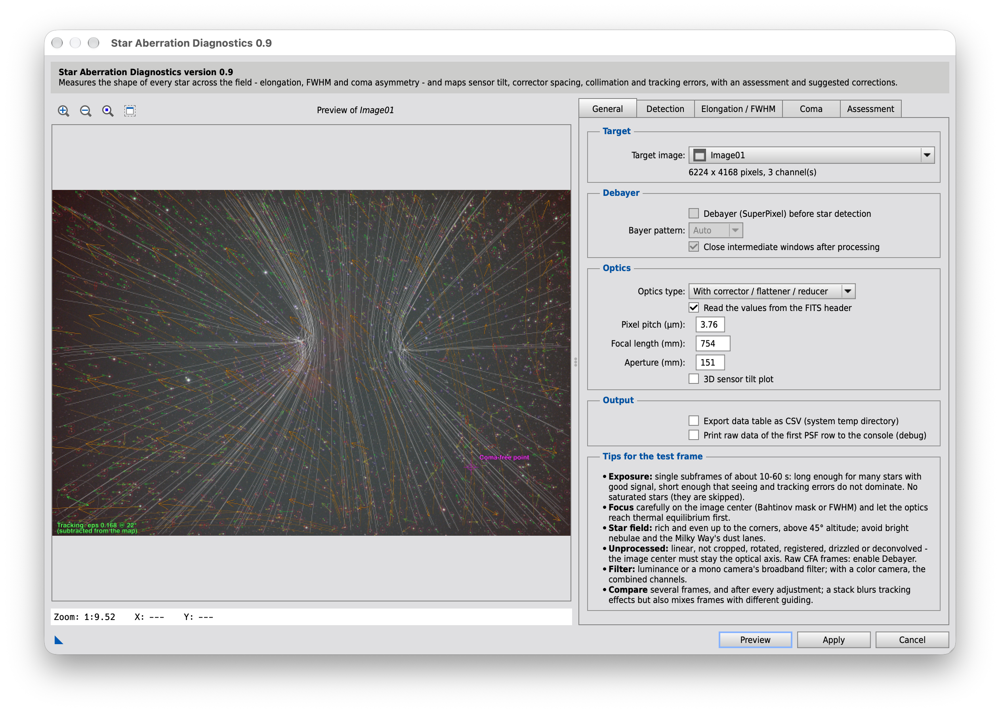

Run via Script > Tricx > StarAberrationDiagnostics
What it does
Diagnoses the optical system from the shapes of the stars across the field:
Vector map of every star's elongation, with streamlines and an orientation heatmap
Sensor tilt from the FWHM across the field (Siril-style quadrants, 11×11 grid, tilt axis, Δz and tilt angle)
Corrector spacing and field curvature from the radial/tangential pattern at the field edge
Coma field and coma-free point from the asymmetry of each star, for collimation
The tracking error shared by all stars, measured and optionally subtracted
An assessment of the results with suggested corrections, in the order in which to work through them
A series analysis of frames before and after a meridian flip, including the plate-solve distortion
An optional AI review of the results, with a step-by-step explanation
Screenshot

Handbook: how the diagnostics work
The chapters below explain every computation of the script: what each error does to the stars, and how
the script captures it mathematically. They build on each other, but each can be read on its own.